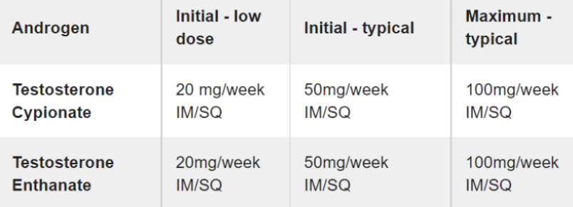

DIY Testosterone: the Ultimate Guide
Last updated June 2022 • Questions or feedback? Get in contact at hrtinfo@protonmail.com
📝 Contents:
What is HRT?
Testosterone (T) is an anabolic steroid and sex hormone found in those assigned male at birth.
Since we were not assigned male at birth, we only produce a small amount in our bodies naturally, and produce
estrogens instead.
What does it do?
Testosterone induces both androgenic and anabolic effects.
Androgenic effects are the masculinizing changes that come with taking testosterone, which includes clitoral
enlargement (bottom growth), voice deepening, cessation of menstruation (periods), increased definition of
facial features and a more masculine fat distribution, facial and body hair growth, increased libido, acne, etc.
You can think of anabolic effects as changes to your body's metabolism, protein building and how it uses energy.
Anabolic effects include increased muscle mass and strength, increased bone density, increased appetite, etc.
The androgenic and anabolic effects of testosterone are about equal. You won't necessarily have roider levels of
strength nor gain significant muscle mass, especially if you don't exercise regularly. Your mileage may vary.
What kind of methods can I get T in?
There are multiple ways, each with their drawbacks, pros, and levels of ease in terms of obtaining them.
Injections
By far the most popular and well known method, injections are the easiest to come by if you choose to DIY.
There are certain esters testosterone is commonly compounded in. Testosterone is esterified in order to last
longer in your body. Raw testosterone injected into your tissues will dissipate very quickly, which is why
testosterone injections all come in ester form.
Testosterone propionate, cypionate and enanthate are the most commonly prescribed and used testosterone
esters.
We will only focus on cypionate and enanthate due to their long half lives, and their basic interchangeability.
Cypionate's half life is about 8 days when injected.
Enanthate's half life is slightly shorter. Treat it similarly to cypionate.
Gels
This is harder to find in concentrations required to suppress estrogen on the grey/black market. Also quite
expensive if buying DIY. Not feasible for most who choose to DIY due to lack of sources and high cost. Fine for
prescribed T.
These come in packets or in a pump.
Pellets
This cannot be found DIY unless you happen to get it done in a back alley with fake pellets. Don't do that.
These are experimental in terms of dosages compared to the other tried and true methods. You can get them
surgically implanted if your insurance covers it. They let out a small dose of T each day and you don't have to
worry about missing a dose. They last about 3-6 months.
Sourcing/Dosing:
Ideally, you would be on T through legal means. However, you may not have the privilege or desire, so this guide
may be of better use for you.
Regardless, if you are willing to attempt DIY, it is a preferable option to not being on T for many.
Legal access to T:
If you are in the US: you can try informed consent (Planned Parenthood locations offer this service), or
any endo that allows it first before attempting DIY. Informed consent is essentially an easier method of
obtaining HRT without having to prove your transness, or be actually diagnosed with gender dysphoria. You just
sign a consent form and that's it.
Here is a community-compiled US-centric map that shows clinics offering informed consent. Read carefully.
Erin's Informed Consent Map
To save on prescribed T in the USA, try goodrx.com for free coupons to
use at participating pharmacies. Cost Plus
Drugs is also a good source of cheap medications if you have a prescription.
Many new mobile apps and telehealth services in the USA also offer informed consent access to HRT, see
this page for a full list for ALL current app/telehealth HRT services: HRT Mobile
Apps/Telehealth
If you are in Australia: check to see if your state allows a form similar to informed consent. If you are
under 16, this may not be available to you.
If you are in the UK: GenderGP (if you can afford it) is a private healthcare service aiding transgender
people in getting on HRT. It uses a model similar to informed consent and asks about your plan for transition.
Unfortunately, they have a bit of a reputation for giving rather undesirable dosing regimens and can be quite
expensive.
DIY:
If you don't want to be on waitlists, have to prove your transness while allowing your body to feminize, or are
unable to get T legally, then you may have to order it online. Learn how to buy Bitcoin. (If you're a minor, get
a trusted adult to purchase the Bitcoin for you, or go to your local BTC ATM.) Some sites also offer payment in
methods such as Zelle, Bank Transfer, Western Union and MoneyGram. (Keep in mind that these methods are often
subject to minimum order requirements, unlike Bitcoin.)
If you choose to order testosterone without a prescription, it will be illegal in most countries (although the
risk of a domestic order being seized, let alone any person in possession of anabolic steroids for personal use
being prosecuted, is unheard of). Testosterone is legal to possess without a prescription in the UK.
Here is a table of typical doses of testosterone used in transmasculine hormone therapy:

I usually recommend people start on 50mg/week. You can either choose to slowly ramp up your dosage, or you can
start at a high dose. There is no evidence that either method is clearly better than the other. I would not
recommend you go over 100mg/week unless you have obvious signs of insufficient T levels after a year on that
dosage (still having menstrual cycles, or a blood test showing inadequate levels).
Vials of testosterone are usually compounded at either 200mg/mL, 250mg/mL or 300mg/mL. This means that for a
200mg/mL vial, every 1mL of liquid will contain 200mg of testosterone. A 10mL vial will then contain a total of
2000mg of testosterone.
We will unfortunately be doing some math here.
The formula to calculate how much liquid to inject is: (amount you want to inject) ÷ (concentration of the
vial) = amount to inject per dose in mL
20 ÷ 200 = 0.1
0.1mL per injection
50 ÷ 200 = 0.25
0.25mL per injection
100 ÷ 200 = 0.5
0.5mL per injection
50 ÷ 250 = 0.2
0.2mL per injection
50 ÷ 300 ≈ 0.17
0.17mL per injection
Not too complicated now, hopefully!
How to perform a T injection
Needles can be bought from any pharmacy over the counter in most countries without a prescription (you may have
to ask the pharmacist directly). Most countries also have online sites that sell appropriate injection needles.
Amazon is a popular source for those in America.
Link to good sources for injection supplies: Injection supplies
There are two methods for a T injection, subcutaneous/subq (injection into the layer of fat under the skin), and
intramuscular/IM (injection deep into the muscle underneath the skin and fat). Both methods result in identical
absorption rates and levels of the drug, whether you prefer subq or IM is mostly personal preference.
Because of the presence of benzyl benzoate in most steroid site sourced vials, some people find subcutaneous
injections to cause some minor post-injection pain.
Appropriate gauges (needle thickness) for a subcutaneous injection are 25-30g, for intramuscular, 23-25g. Subq
needles are thinner than IM needles, which some people find less intimidating.
Recommended needle lengths are as follows:
There are many online videos and guides for how to administer an intramuscular or subcutaneous injection, here are a few decent ones:
https://getplume.co/patient-resources/
Extremely detailed video guides on both IM and subq injections, with the downside that they are split into multiple long videos. Slightly less professional but shorter guide videos are below:
https://www.youtube.com/watch?v=APSPbpqefKw
https://www.youtube.com/watch?v=W5GAyZzDpNU
Be sure to dispose of your needle tips inside of a hard plastic container or a sharps bin to prevent injury.
Blood Testing
Regular blood testing every ~3 months or so is useful, but not absolutely mandatory, especially if not particularly affordable or feasible. Here are some sources of private blood testing if you cannot access it through the medical system:
(USA): https://www.privatemdlabs.com/(USA): https://labsmd.com/
(USA): https://www.walkinlab.com/
(UK, Ireland): https://www.medichecks.com/
(Canada): https://bloodtestscanada.com/
(Sweden): https://werlabs.se/
(NL): https://www.bloedwaardentest.nl/ (NZ): https://www.pathlab.co.nz/patient-requested/
International sources for blood testing are unfortunately rare. You can try to find local private blood
testing services or ask a doctor if they can provide you with the appropriate blood lab requisition forms.
Unfortunately, depending on your circumstances, you may be unable to find a way to get blood tests.
Get your estradiol (E2) and total testosterone (T) tested every time. Get your blood taken as close as
possible to your next scheduled injection/dose (Test your blood as far away as possible from a previous dose,
right before your next scheduled dose. Preferably the day of your shot, or the day before).
Occasional testing of Complete Blood Count (CBC), Liver Function Tests (LFT)/Liver enzymes, Clotting factors
test, and Lipid profile test (cholesterol, triglycerides) can be useful to monitor certain health risks
associated with testosterone therapy.
For a full list of potential increased risks of certain health issues associated with transmasculine HRT, you
can refer to this resource: http://www.ftmguide.org/tandhealth#sideeffects.
Most of the serious side effects are extremely low in absolute risk.
Polycythemia (high concentration of red blood cells in the blood) is a unique risk for transmascs taking any
testosterone therapy. CBC tests to monitor your hematocrit (red blood cell count) are recommended.
Hormone therapy in general is very safe and effective as long as you take reasonable doses.
Sources:
CAUTION: If there is not a source listed, please check https://www.eroids.com/reviews/ before buying.US Sourcing:
(Accepts Bitcoin, Zelle, Bank Transfer, Western Union, Money Gram)
Author's Note: Personally, I have purchased from RoidBazaar and have had really good service, even after I
fucked up Bitcoin sending. I purchased 3 vials of Odin Pharma's T enanthate compounded at 250 mg/mL. It's
been great.
ALL Testosterone Enanthate -
https://us.roidbazaar.me/testosterone-enanthate/
ALL Testosterone Cypionate -
https://us.roidbazaar.me/testosterone-cypionate/
Canadian Sourcing:
(Accepts Bitcoin, Takes Interac E-Transfer!)
Testosterone Enanthate -
https://alphanorthlabs.com/product/testosterone-enanthate/
Testosterone Cypionate -
https://alphanorthlabs.com/product/testosterone-cypionate/
UK Sourcing:
(Accepts Bitcoin, Zelle, Bank Transfer, Western Union, Money Gram)
Testosterone Enanthate -
https://roidbazaar.me/satan-pharma/testosterone-enanthate/
Testosterone Cypionate -
https://roidbazaar.me/satan-pharma/testosterone-cypionate/
(Accepts credit/debit card)
Testosterone Enanthate -
http://anabolic-steroids.shop/injectable-steroids/enanthat_250
http://anabolic-steroids.shop/injectable-steroids/testo-enane-10
Testosterone Cypionate -
http://anabolic-steroids.shop/injectable-steroids/cypionat_250
Testosterone Gels -
http://anabolic-steroids.shop/gel
(Accepts Bitcoin, bank transfer)
Testosterone Enanthate -
https://musclerapid.com/product/rohm-test-enanthate-300mg-ml/
https://musclerapid.com/product/adelphi-test-e-300/
Testosterone Cypionate -
https://musclerapid.com/product/pharmacom-test-c/
https://musclerapid.com/product/rohm-test-cyp-200mg-ml/
https://musclerapid.com/product/adelphi-test-cyp/
EU Sourcing:
(Accepts Bitcoin, Zelle, Bank Transfer, Western Union, Money Gram)
Testosterone Enanthate -
https://eu.roidbazaar.me/eu-warehouse-4/testosterone-enanthate/
https://eu.roidbazaar.me/europe-domestic/testosterone-enanthate-250-1297/
Testosterone Cypionate -
https://eu.roidbazaar.me/eu-warehouse-4/testosterone-cypionate/
https://eu.roidbazaar.me/europe-domestic/testosterone-cypionate-250-1296/
International Sourcing:
Almost all steroid sites will ship internationally, but there will always be an increased risk to ordering internationally for seizure of packages versus ordering domestically. Unfortunately, many countries lack international sources. Order at your own risk.
Has a good reputation in the roid community for successful international shipments.
(Accepts Bitcoin, Zelle, Bank Transfer, Western Union, Money Gram)
Testosterone Enanthate -
https://roidbazaar.me/pharma-grade/testosterone-enanthate-250/
https://roidbazaar.me/SCIROXX-Pharma/testodex-enanthate-250/
https://roidbazaar.me/7Lab/testolab-e-250/
Testosterone Cypionate -
https://roidbazaar.me/xeno-labs/testosterone-cypionate-250/
https://roidbazaar.me/SCIROXX-Pharma/testodex-cypionate-250/
https://roidbazaar.me/7Lab/testolab-c-250/
Frequently Asked Questions:
Traveling with testosterone.
It is NOT recommended to travel with DIY-sourced testosterone, as airport security may check through all
luggage. If your T vial shows up on a scanner, you may be charged with possession of a controlled substance.
The absolute risk isn't very high, but it's best to try and stay on the safe side.
If you MUST travel with DIY-sourced T, get a large clear Ziploc bag, have your T clearly labeled as
testosterone, and throw in some aspirin and allergy meds inside with the T. Most likely airport security will
not hound you for a prescription.
If you are arrested, do not say anything to the police (but don't make things up and lie to them) and contact a
lawyer as soon as an opportunity is provided to you.
Obviously, it is fine to travel with legitimately obtained, prescribed T. Just make sure you have the
prescription with you.